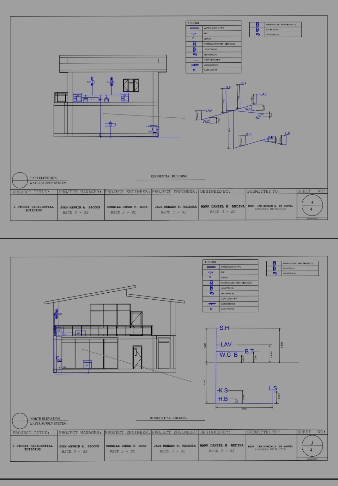

Residential Plumbing & Water Supply System
Revit / CAD-based academic project
Contributed to a two-storey residential building project focused on the water supply system, including plumbing layouts, elevations, fixture locations, and drawing presentation.